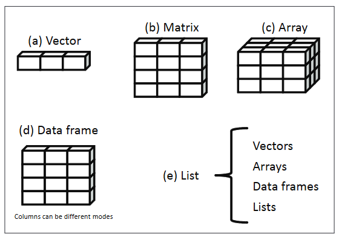
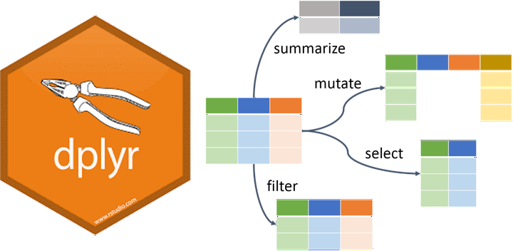
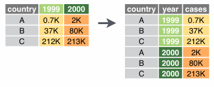
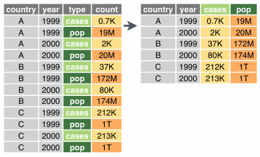

.
Overview
- Dataframe and tibble
- Introduction to Tidyverse
- Basic data wrangling with
dplyr - Data reshaping
- Case studies

Illustration adopted from Allison Horst
Introduction to Tidyverse
Tidyverse package

What is tidyverse?
A collection of R packages designed for data science.
All packages share an underlying philosophy, grammar, and data structure.


Illustration adopted from Allison Horst

Illustration adopted from Allison Horst
Tidy data makes it easier for reproducibility and reuse

Illustration adopted from Allison Horst
Yehey! Tidy Data for the win!

Illustration adopted from Allison Horst
Data structures
Data structure
- R has a variety of holding data
- e.g., scalars, vectors, matrices, arrays, dataframes

R Data Structure. Source: Kabacoff (2011) R in Action
Vectors
- vectors are one dimnensional arrays that can hold numeric, character, or logical data
- combine function
c()is used to form a vector
ais a numeric vectorbis a character vectorcis a logical vector
Vectors
- vectors are one dimnensional arrays that can hold numeric, character, or logical data
- combine function
c()is used to form a vector - scalars are one-element vectors. They’re used to hold constants.
- e.g.,
f <- 3, g<- "US"andh <- TRUE
- e.g.,
Vectors
Remember
Data in a vector must only be one type or mode (numeric, character, or logical). You can’t mix modes in the same vector. If you try to mix data types (modes) in a vector, R automatically converts the elements of the vector to a single, common type.
logicals and numerics, logicals → numeric (
TRUE = 1,FALSE = 0)integers and numerics, integers → numeric
anything with characters → character strings
Matrices
- two-dimensional array where each element has the same data types
- matrices are created with the
matrixfunction
Matrices
- two-dimensional array where each element has the same data types
- matrices are created with the
matrixfunction
Data frame
a more general than a matrix in that different columns can contain different modes of data
similar to the datasets you’d typically see in SAS, SPSS, and Stata
data frames are the most common data structure you’ll deal with in R

Source: Wickham 2025. R for Data Science 2nd ed
Data frame
- data frames are the most common data structure you will be working in R
- you can create a data frame using
data.frame()function
```{r}
## creating column vector
patientID <- c(1, 2, 3, 4)
age <- c(25, 34, 28, 52)
diabetes <- c("Type1", "Type2", "Type1", "Type1")
status <- c("Poor", "Improved", "Excellent", "Poor")
## using data.frame to create patient_data frame
patientdata <- data.frame(patientID, age, diabetes, status)
## print patient data frame
patientdata
``` patientID age diabetes status
1 1 25 Type1 Poor
2 2 34 Type2 Improved
3 3 28 Type1 Excellent
4 4 52 Type1 PoorTibble
- a modern reimagining of
data.frame - tibbles are data frames
- create a tibble from individual vectors using
tibble()function
Tibble
- we can coerce a data frame to a tibble using
as_tibblefunction
Sepal.Length Sepal.Width Petal.Length Petal.Width Species
1 5.1 3.5 1.4 0.2 setosa
2 4.9 3.0 1.4 0.2 setosa
3 4.7 3.2 1.3 0.2 setosa
4 4.6 3.1 1.5 0.2 setosa
5 5.0 3.6 1.4 0.2 setosa
6 5.4 3.9 1.7 0.4 setosa
7 4.6 3.4 1.4 0.3 setosa
8 5.0 3.4 1.5 0.2 setosa
9 4.4 2.9 1.4 0.2 setosa
10 4.9 3.1 1.5 0.1 setosa
11 5.4 3.7 1.5 0.2 setosa
12 4.8 3.4 1.6 0.2 setosa
13 4.8 3.0 1.4 0.1 setosa
14 4.3 3.0 1.1 0.1 setosa
15 5.8 4.0 1.2 0.2 setosa
16 5.7 4.4 1.5 0.4 setosa
17 5.4 3.9 1.3 0.4 setosa
18 5.1 3.5 1.4 0.3 setosa
19 5.7 3.8 1.7 0.3 setosa
20 5.1 3.8 1.5 0.3 setosa
21 5.4 3.4 1.7 0.2 setosa
22 5.1 3.7 1.5 0.4 setosa
23 4.6 3.6 1.0 0.2 setosa
24 5.1 3.3 1.7 0.5 setosa
25 4.8 3.4 1.9 0.2 setosa
26 5.0 3.0 1.6 0.2 setosa
27 5.0 3.4 1.6 0.4 setosa
28 5.2 3.5 1.5 0.2 setosa
29 5.2 3.4 1.4 0.2 setosa
30 4.7 3.2 1.6 0.2 setosa
31 4.8 3.1 1.6 0.2 setosa
32 5.4 3.4 1.5 0.4 setosa
33 5.2 4.1 1.5 0.1 setosa
34 5.5 4.2 1.4 0.2 setosa
35 4.9 3.1 1.5 0.2 setosa
36 5.0 3.2 1.2 0.2 setosa
37 5.5 3.5 1.3 0.2 setosa
38 4.9 3.6 1.4 0.1 setosa
39 4.4 3.0 1.3 0.2 setosa
40 5.1 3.4 1.5 0.2 setosa
41 5.0 3.5 1.3 0.3 setosa
42 4.5 2.3 1.3 0.3 setosa
43 4.4 3.2 1.3 0.2 setosa
44 5.0 3.5 1.6 0.6 setosa
45 5.1 3.8 1.9 0.4 setosa
46 4.8 3.0 1.4 0.3 setosa
47 5.1 3.8 1.6 0.2 setosa
48 4.6 3.2 1.4 0.2 setosa
49 5.3 3.7 1.5 0.2 setosa
50 5.0 3.3 1.4 0.2 setosa
51 7.0 3.2 4.7 1.4 versicolor
52 6.4 3.2 4.5 1.5 versicolor
53 6.9 3.1 4.9 1.5 versicolor
54 5.5 2.3 4.0 1.3 versicolor
55 6.5 2.8 4.6 1.5 versicolor
56 5.7 2.8 4.5 1.3 versicolor
57 6.3 3.3 4.7 1.6 versicolor
58 4.9 2.4 3.3 1.0 versicolor
59 6.6 2.9 4.6 1.3 versicolor
60 5.2 2.7 3.9 1.4 versicolor
61 5.0 2.0 3.5 1.0 versicolor
62 5.9 3.0 4.2 1.5 versicolor
63 6.0 2.2 4.0 1.0 versicolor
64 6.1 2.9 4.7 1.4 versicolor
65 5.6 2.9 3.6 1.3 versicolor
66 6.7 3.1 4.4 1.4 versicolor
67 5.6 3.0 4.5 1.5 versicolor
68 5.8 2.7 4.1 1.0 versicolor
69 6.2 2.2 4.5 1.5 versicolor
70 5.6 2.5 3.9 1.1 versicolor
71 5.9 3.2 4.8 1.8 versicolor
72 6.1 2.8 4.0 1.3 versicolor
73 6.3 2.5 4.9 1.5 versicolor
74 6.1 2.8 4.7 1.2 versicolor
75 6.4 2.9 4.3 1.3 versicolor
76 6.6 3.0 4.4 1.4 versicolor
77 6.8 2.8 4.8 1.4 versicolor
78 6.7 3.0 5.0 1.7 versicolor
79 6.0 2.9 4.5 1.5 versicolor
80 5.7 2.6 3.5 1.0 versicolor
81 5.5 2.4 3.8 1.1 versicolor
82 5.5 2.4 3.7 1.0 versicolor
83 5.8 2.7 3.9 1.2 versicolor
84 6.0 2.7 5.1 1.6 versicolor
85 5.4 3.0 4.5 1.5 versicolor
86 6.0 3.4 4.5 1.6 versicolor
87 6.7 3.1 4.7 1.5 versicolor
88 6.3 2.3 4.4 1.3 versicolor
89 5.6 3.0 4.1 1.3 versicolor
90 5.5 2.5 4.0 1.3 versicolor
91 5.5 2.6 4.4 1.2 versicolor
92 6.1 3.0 4.6 1.4 versicolor
93 5.8 2.6 4.0 1.2 versicolor
94 5.0 2.3 3.3 1.0 versicolor
95 5.6 2.7 4.2 1.3 versicolor
96 5.7 3.0 4.2 1.2 versicolor
97 5.7 2.9 4.2 1.3 versicolor
98 6.2 2.9 4.3 1.3 versicolor
99 5.1 2.5 3.0 1.1 versicolor
100 5.7 2.8 4.1 1.3 versicolor
101 6.3 3.3 6.0 2.5 virginica
102 5.8 2.7 5.1 1.9 virginica
103 7.1 3.0 5.9 2.1 virginica
104 6.3 2.9 5.6 1.8 virginica
105 6.5 3.0 5.8 2.2 virginica
106 7.6 3.0 6.6 2.1 virginica
107 4.9 2.5 4.5 1.7 virginica
108 7.3 2.9 6.3 1.8 virginica
109 6.7 2.5 5.8 1.8 virginica
110 7.2 3.6 6.1 2.5 virginica
111 6.5 3.2 5.1 2.0 virginica
112 6.4 2.7 5.3 1.9 virginica
113 6.8 3.0 5.5 2.1 virginica
114 5.7 2.5 5.0 2.0 virginica
115 5.8 2.8 5.1 2.4 virginica
116 6.4 3.2 5.3 2.3 virginica
117 6.5 3.0 5.5 1.8 virginica
118 7.7 3.8 6.7 2.2 virginica
119 7.7 2.6 6.9 2.3 virginica
120 6.0 2.2 5.0 1.5 virginica
121 6.9 3.2 5.7 2.3 virginica
122 5.6 2.8 4.9 2.0 virginica
123 7.7 2.8 6.7 2.0 virginica
124 6.3 2.7 4.9 1.8 virginica
125 6.7 3.3 5.7 2.1 virginica
126 7.2 3.2 6.0 1.8 virginica
127 6.2 2.8 4.8 1.8 virginica
128 6.1 3.0 4.9 1.8 virginica
129 6.4 2.8 5.6 2.1 virginica
130 7.2 3.0 5.8 1.6 virginica
131 7.4 2.8 6.1 1.9 virginica
132 7.9 3.8 6.4 2.0 virginica
133 6.4 2.8 5.6 2.2 virginica
134 6.3 2.8 5.1 1.5 virginica
135 6.1 2.6 5.6 1.4 virginica
136 7.7 3.0 6.1 2.3 virginica
137 6.3 3.4 5.6 2.4 virginica
138 6.4 3.1 5.5 1.8 virginica
139 6.0 3.0 4.8 1.8 virginica
140 6.9 3.1 5.4 2.1 virginica
141 6.7 3.1 5.6 2.4 virginica
142 6.9 3.1 5.1 2.3 virginica
143 5.8 2.7 5.1 1.9 virginica
144 6.8 3.2 5.9 2.3 virginica
145 6.7 3.3 5.7 2.5 virginica
146 6.7 3.0 5.2 2.3 virginica
147 6.3 2.5 5.0 1.9 virginica
148 6.5 3.0 5.2 2.0 virginica
149 6.2 3.4 5.4 2.3 virginica
150 5.9 3.0 5.1 1.8 virginica# A tibble: 150 × 5
Sepal.Length Sepal.Width Petal.Length Petal.Width Species
<dbl> <dbl> <dbl> <dbl> <fct>
1 5.1 3.5 1.4 0.2 setosa
2 4.9 3 1.4 0.2 setosa
3 4.7 3.2 1.3 0.2 setosa
4 4.6 3.1 1.5 0.2 setosa
5 5 3.6 1.4 0.2 setosa
6 5.4 3.9 1.7 0.4 setosa
7 4.6 3.4 1.4 0.3 setosa
8 5 3.4 1.5 0.2 setosa
9 4.4 2.9 1.4 0.2 setosa
10 4.9 3.1 1.5 0.1 setosa
# ℹ 140 more rowscheck-up quiz
Which of the following is NOT a basic data structure in R?
- Vector
- Matrix
- Array
- Function
What is the correct description of a vector in R?
- A two‑dimensional array with elements of the same type
- A one‑dimensional array that can hold numeric, character, or logical data
- A collection of variables of different modes stored in columns
- A hierarchical structure for storing lists
What happens if you mix data types in a vector?
- R throws an error and stops execution
- R automatically converts all elements to a single common type
- R stores each element in its original type
- R creates a list instead of a vector
Which function is used to create a matrix in R?
- c()
- data.frame()
- matrix()
- array()
How does a data frame differ from a matrix in R?
- A data frame can only hold numeric data
- A data frame allows different columns to contain different modes of data
- A data frame is limited to two dimensions
- A data frame cannot be printed in tabular form
Reading data into R
Importing data
SPSS, Stata, SAS files: haven package
Excel files: readxl package
CSV files: readr package
Importing data into R
SPSS, Stata & SAS using haven package
Importing data into R
Excel files using readxl package
# A tibble: 32 × 11
mpg cyl disp hp drat wt qsec vs am gear carb
<dbl> <dbl> <dbl> <dbl> <dbl> <dbl> <dbl> <dbl> <dbl> <dbl> <dbl>
1 21 6 160 110 3.9 2.62 16.5 0 1 4 4
2 21 6 160 110 3.9 2.88 17.0 0 1 4 4
3 22.8 4 108 93 3.85 2.32 18.6 1 1 4 1
4 21.4 6 258 110 3.08 3.22 19.4 1 0 3 1
5 18.7 8 360 175 3.15 3.44 17.0 0 0 3 2
6 18.1 6 225 105 2.76 3.46 20.2 1 0 3 1
7 14.3 8 360 245 3.21 3.57 15.8 0 0 3 4
8 24.4 4 147. 62 3.69 3.19 20 1 0 4 2
9 22.8 4 141. 95 3.92 3.15 22.9 1 0 4 2
10 19.2 6 168. 123 3.92 3.44 18.3 1 0 4 4
# ℹ 22 more rowsImporting data into R
CSV files using readr package
Check-up quiz
Which R package is used to import SPSS, Stata, and SAS files?
- readr
- haven
- readxl
- tidyr
If you want to import Excel files into R, which function should you use?
- read_csv()
- read_excel()
- read_sav()
- read_tsv()
Which function from the readr package is used to import comma‑separated values (CSV) files?
- read_csv()
- read_delim()
- read_tsv()
- read_excel()
Which of the following statements about importing data into R is TRUE?
- read_sav() is used for Excel files
- read_tsv() is used for tab‑separated files
- read_excel() is part of the readr package
- read_dta() is used for CSV files
Which package would you use if you need to import a dataset saved in Stata format (.dta)?
- readxl
- readr
- haven
- tidyr
Basic data wrangling with dplyr
Data wrangling using dplyr

Illustration adopted from Allison Horst
dplyr
Overview
select()picks variables based on their namesmutate()adds new variablesfilter()picks cases based on their valuessummarise()reduces multiple values down to a single summaryarrange()change the ordering of the rows

select()
data
# A tibble: 1,704 × 6
country continent year lifeExp pop gdpPercap
<fct> <fct> <int> <dbl> <int> <dbl>
1 Afghanistan Asia 1952 28.8 8425333 779.
2 Afghanistan Asia 1957 30.3 9240934 821.
3 Afghanistan Asia 1962 32.0 10267083 853.
4 Afghanistan Asia 1967 34.0 11537966 836.
5 Afghanistan Asia 1972 36.1 13079460 740.
6 Afghanistan Asia 1977 38.4 14880372 786.
7 Afghanistan Asia 1982 39.9 12881816 978.
8 Afghanistan Asia 1987 40.8 13867957 852.
9 Afghanistan Asia 1992 41.7 16317921 649.
10 Afghanistan Asia 1997 41.8 22227415 635.
# ℹ 1,694 more rowsselect(data, continent, country, pop)
# A tibble: 1,704 × 3
continent country pop
<fct> <fct> <int>
1 Asia Afghanistan 8425333
2 Asia Afghanistan 9240934
3 Asia Afghanistan 10267083
4 Asia Afghanistan 11537966
5 Asia Afghanistan 13079460
6 Asia Afghanistan 14880372
7 Asia Afghanistan 12881816
8 Asia Afghanistan 13867957
9 Asia Afghanistan 16317921
10 Asia Afghanistan 22227415
# ℹ 1,694 more rowsselect()
We can also remove variables with a - (minus)
data
# A tibble: 1,704 × 6
country continent year lifeExp pop gdpPercap
<fct> <fct> <int> <dbl> <int> <dbl>
1 Afghanistan Asia 1952 28.8 8425333 779.
2 Afghanistan Asia 1957 30.3 9240934 821.
3 Afghanistan Asia 1962 32.0 10267083 853.
4 Afghanistan Asia 1967 34.0 11537966 836.
5 Afghanistan Asia 1972 36.1 13079460 740.
6 Afghanistan Asia 1977 38.4 14880372 786.
7 Afghanistan Asia 1982 39.9 12881816 978.
8 Afghanistan Asia 1987 40.8 13867957 852.
9 Afghanistan Asia 1992 41.7 16317921 649.
10 Afghanistan Asia 1997 41.8 22227415 635.
# ℹ 1,694 more rowsselect(data, -year, -pop)
# A tibble: 1,704 × 4
country continent lifeExp gdpPercap
<fct> <fct> <dbl> <dbl>
1 Afghanistan Asia 28.8 779.
2 Afghanistan Asia 30.3 821.
3 Afghanistan Asia 32.0 853.
4 Afghanistan Asia 34.0 836.
5 Afghanistan Asia 36.1 740.
6 Afghanistan Asia 38.4 786.
7 Afghanistan Asia 39.9 978.
8 Afghanistan Asia 40.8 852.
9 Afghanistan Asia 41.7 649.
10 Afghanistan Asia 41.8 635.
# ℹ 1,694 more rowsselect()
Selection helpers
These selection helpers match variables according to a given pattern.
starts_with()starts with a prefixends_with()ends with a suffixcontains()contains a literal stringmatches()matches regular expression
filter()
data
# A tibble: 1,704 × 6
country continent year lifeExp pop gdpPercap
<fct> <fct> <int> <dbl> <int> <dbl>
1 Afghanistan Asia 1952 28.8 8425333 779.
2 Afghanistan Asia 1957 30.3 9240934 821.
3 Afghanistan Asia 1962 32.0 10267083 853.
4 Afghanistan Asia 1967 34.0 11537966 836.
5 Afghanistan Asia 1972 36.1 13079460 740.
6 Afghanistan Asia 1977 38.4 14880372 786.
7 Afghanistan Asia 1982 39.9 12881816 978.
8 Afghanistan Asia 1987 40.8 13867957 852.
9 Afghanistan Asia 1992 41.7 16317921 649.
10 Afghanistan Asia 1997 41.8 22227415 635.
# ℹ 1,694 more rowsfilter(data, country == "Philippines")
# A tibble: 12 × 6
country continent year lifeExp pop gdpPercap
<fct> <fct> <int> <dbl> <int> <dbl>
1 Philippines Asia 1952 47.8 22438691 1273.
2 Philippines Asia 1957 51.3 26072194 1548.
3 Philippines Asia 1962 54.8 30325264 1650.
4 Philippines Asia 1967 56.4 35356600 1814.
5 Philippines Asia 1972 58.1 40850141 1989.
6 Philippines Asia 1977 60.1 46850962 2373.
7 Philippines Asia 1982 62.1 53456774 2603.
8 Philippines Asia 1987 64.2 60017788 2190.
9 Philippines Asia 1992 66.5 67185766 2279.
10 Philippines Asia 1997 68.6 75012988 2537.
11 Philippines Asia 2002 70.3 82995088 2651.
12 Philippines Asia 2007 71.7 91077287 3190.mutate()
The mutate function will take a statement similar to this:
variable_name=do_some_calculationvariable_namewill be attached at the end of the dataset.
mutate()
Let’s calculate the gdp
data
# A tibble: 1,704 × 6
country continent year lifeExp pop gdpPercap
<fct> <fct> <int> <dbl> <int> <dbl>
1 Afghanistan Asia 1952 28.8 8425333 779.
2 Afghanistan Asia 1957 30.3 9240934 821.
3 Afghanistan Asia 1962 32.0 10267083 853.
4 Afghanistan Asia 1967 34.0 11537966 836.
5 Afghanistan Asia 1972 36.1 13079460 740.
6 Afghanistan Asia 1977 38.4 14880372 786.
7 Afghanistan Asia 1982 39.9 12881816 978.
8 Afghanistan Asia 1987 40.8 13867957 852.
9 Afghanistan Asia 1992 41.7 16317921 649.
10 Afghanistan Asia 1997 41.8 22227415 635.
# ℹ 1,694 more rowsmutate(data, GDP = gdpPercap * pop)
# A tibble: 1,704 × 7
country continent year lifeExp pop gdpPercap GDP
<fct> <fct> <int> <dbl> <int> <dbl> <dbl>
1 Afghanistan Asia 1952 28.8 8425333 779. 6567086330.
2 Afghanistan Asia 1957 30.3 9240934 821. 7585448670.
3 Afghanistan Asia 1962 32.0 10267083 853. 8758855797.
4 Afghanistan Asia 1967 34.0 11537966 836. 9648014150.
5 Afghanistan Asia 1972 36.1 13079460 740. 9678553274.
6 Afghanistan Asia 1977 38.4 14880372 786. 11697659231.
7 Afghanistan Asia 1982 39.9 12881816 978. 12598563401.
8 Afghanistan Asia 1987 40.8 13867957 852. 11820990309.
9 Afghanistan Asia 1992 41.7 16317921 649. 10595901589.
10 Afghanistan Asia 1997 41.8 22227415 635. 14121995875.
# ℹ 1,694 more rowsrename()
Changes the variable name while keeping all else intact.
new_variable_name=old_variable_name
data
# A tibble: 1,704 × 6
country continent year lifeExp pop gdpPercap
<fct> <fct> <int> <dbl> <int> <dbl>
1 Afghanistan Asia 1952 28.8 8425333 779.
2 Afghanistan Asia 1957 30.3 9240934 821.
3 Afghanistan Asia 1962 32.0 10267083 853.
4 Afghanistan Asia 1967 34.0 11537966 836.
5 Afghanistan Asia 1972 36.1 13079460 740.
6 Afghanistan Asia 1977 38.4 14880372 786.
7 Afghanistan Asia 1982 39.9 12881816 978.
8 Afghanistan Asia 1987 40.8 13867957 852.
9 Afghanistan Asia 1992 41.7 16317921 649.
10 Afghanistan Asia 1997 41.8 22227415 635.
# ℹ 1,694 more rowsrename(data, population = pop)
# A tibble: 1,704 × 6
country continent year lifeExp population gdpPercap
<fct> <fct> <int> <dbl> <int> <dbl>
1 Afghanistan Asia 1952 28.8 8425333 779.
2 Afghanistan Asia 1957 30.3 9240934 821.
3 Afghanistan Asia 1962 32.0 10267083 853.
4 Afghanistan Asia 1967 34.0 11537966 836.
5 Afghanistan Asia 1972 36.1 13079460 740.
6 Afghanistan Asia 1977 38.4 14880372 786.
7 Afghanistan Asia 1982 39.9 12881816 978.
8 Afghanistan Asia 1987 40.8 13867957 852.
9 Afghanistan Asia 1992 41.7 16317921 649.
10 Afghanistan Asia 1997 41.8 22227415 635.
# ℹ 1,694 more rowsarrange()
You can order data by variable to show the highest or lowest values first.
consider lifeExp default is lowest first
data
# A tibble: 1,704 × 6
country continent year lifeExp pop gdpPercap
<fct> <fct> <int> <dbl> <int> <dbl>
1 Afghanistan Asia 1952 28.8 8425333 779.
2 Afghanistan Asia 1957 30.3 9240934 821.
3 Afghanistan Asia 1962 32.0 10267083 853.
4 Afghanistan Asia 1967 34.0 11537966 836.
5 Afghanistan Asia 1972 36.1 13079460 740.
6 Afghanistan Asia 1977 38.4 14880372 786.
7 Afghanistan Asia 1982 39.9 12881816 978.
8 Afghanistan Asia 1987 40.8 13867957 852.
9 Afghanistan Asia 1992 41.7 16317921 649.
10 Afghanistan Asia 1997 41.8 22227415 635.
# ℹ 1,694 more rowsdesc() sort lifeExp from highest to lowest
arrange(data, desc(lifeExp))
# A tibble: 1,704 × 6
country continent year lifeExp pop gdpPercap
<fct> <fct> <int> <dbl> <int> <dbl>
1 Japan Asia 2007 82.6 127467972 31656.
2 Hong Kong, China Asia 2007 82.2 6980412 39725.
3 Japan Asia 2002 82 127065841 28605.
4 Iceland Europe 2007 81.8 301931 36181.
5 Switzerland Europe 2007 81.7 7554661 37506.
6 Hong Kong, China Asia 2002 81.5 6762476 30209.
7 Australia Oceania 2007 81.2 20434176 34435.
8 Spain Europe 2007 80.9 40448191 28821.
9 Sweden Europe 2007 80.9 9031088 33860.
10 Israel Asia 2007 80.7 6426679 25523.
# ℹ 1,694 more rowsgroup_by and summarise()
Use when you want to aggregate your data (by groups).
Sometimes we want to calculate group statistics.

group_by and summarise()
Suppose we want to know the average population by continent.
data
# A tibble: 1,704 × 6
country continent year lifeExp pop gdpPercap
<fct> <fct> <int> <dbl> <int> <dbl>
1 Afghanistan Asia 1952 28.8 8425333 779.
2 Afghanistan Asia 1957 30.3 9240934 821.
3 Afghanistan Asia 1962 32.0 10267083 853.
4 Afghanistan Asia 1967 34.0 11537966 836.
5 Afghanistan Asia 1972 36.1 13079460 740.
6 Afghanistan Asia 1977 38.4 14880372 786.
7 Afghanistan Asia 1982 39.9 12881816 978.
8 Afghanistan Asia 1987 40.8 13867957 852.
9 Afghanistan Asia 1992 41.7 16317921 649.
10 Afghanistan Asia 1997 41.8 22227415 635.
# ℹ 1,694 more rowsgroup_by and summarise()
Suppose we want to know the average population by continent.
data
# A tibble: 1,704 × 6
country continent year lifeExp pop gdpPercap
<fct> <fct> <int> <dbl> <int> <dbl>
1 Afghanistan Asia 1952 28.8 8425333 779.
2 Afghanistan Asia 1957 30.3 9240934 821.
3 Afghanistan Asia 1962 32.0 10267083 853.
4 Afghanistan Asia 1967 34.0 11537966 836.
5 Afghanistan Asia 1972 36.1 13079460 740.
6 Afghanistan Asia 1977 38.4 14880372 786.
7 Afghanistan Asia 1982 39.9 12881816 978.
8 Afghanistan Asia 1987 40.8 13867957 852.
9 Afghanistan Asia 1992 41.7 16317921 649.
10 Afghanistan Asia 1997 41.8 22227415 635.
# ℹ 1,694 more rowsgrouped_by_continent <- group_by(data, continent)
summarised_data <- summarise(grouped_by_continent, avg_pop = mean(pop))
arrange(summarised_data, desc(avg_pop))
# A tibble: 5 × 2
continent avg_pop
<fct> <dbl>
1 Asia 77038722.
2 Americas 24504795.
3 Europe 17169765.
4 Africa 9916003.
5 Oceania 8874672.Too many codes!
It’s hard to follow!
It’s hard to keep track of the codes!

%>% or |>pipe operator
The %>% and |> operator
The %>% or |> helps your write code in a way that is easier to read and understand.
grouped_by_continent <- group_by(data, continent)
summarised_data <- summarise(grouped_by_continent, avg_pop = mean(pop))
arrange(summarised_data, desc(avg_pop))
# A tibble: 5 × 2
continent avg_pop
<fct> <dbl>
1 Asia 77038722.
2 Americas 24504795.
3 Europe 17169765.
4 Africa 9916003.
5 Oceania 8874672.The%>%operator
What is the average life expectancy of Asian countries per year?
filtered_by_asia <- filter(data, continent == "Asia")
grouped_by_country_year <- group_by(filtered_by_asia, country, year)
summarise(grouped_by_country_year, avg_lifeExp = mean(lifeExp))
# A tibble: 396 × 3
# Groups: country [33]
country year avg_lifeExp
<fct> <int> <dbl>
1 Afghanistan 1952 28.8
2 Afghanistan 1957 30.3
3 Afghanistan 1962 32.0
4 Afghanistan 1967 34.0
5 Afghanistan 1972 36.1
6 Afghanistan 1977 38.4
7 Afghanistan 1982 39.9
8 Afghanistan 1987 40.8
9 Afghanistan 1992 41.7
10 Afghanistan 1997 41.8
# ℹ 386 more rowsdata %>%
filter(continent == "Asia") %>%
group_by(country, year) %>%
summarise(avg_lifeExp = mean(lifeExp))
# A tibble: 396 × 3
# Groups: country [33]
country year avg_lifeExp
<fct> <int> <dbl>
1 Afghanistan 1952 28.8
2 Afghanistan 1957 30.3
3 Afghanistan 1962 32.0
4 Afghanistan 1967 34.0
5 Afghanistan 1972 36.1
6 Afghanistan 1977 38.4
7 Afghanistan 1982 39.9
8 Afghanistan 1987 40.8
9 Afghanistan 1992 41.7
10 Afghanistan 1997 41.8
# ℹ 386 more rowsThe %>% operator
filtered_by_asia <- filter(data, continent == "Asia")
grouped_by_country <- group_by(filtered_by_asia, country)
summarised_by_country <- summarise(
grouped_by_country,
avg_lifeExp = mean(lifeExp)
)
arrange(summarised_by_country, desc(avg_lifeExp))
# A tibble: 33 × 2
country avg_lifeExp
<fct> <dbl>
1 Japan 74.8
2 Israel 73.6
3 Hong Kong, China 73.5
4 Singapore 71.2
5 Taiwan 70.3
6 Kuwait 68.9
7 Sri Lanka 66.5
8 Lebanon 65.9
9 Bahrain 65.6
10 Korea, Rep. 65.0
# ℹ 23 more rowsdata %>%
filter(continent == "Asia") %>%
group_by(country) %>%
summarise(avg_lifeExp = mean(lifeExp)) %>%
arrange(desc(avg_lifeExp))
# A tibble: 33 × 2
country avg_lifeExp
<fct> <dbl>
1 Japan 74.8
2 Israel 73.6
3 Hong Kong, China 73.5
4 Singapore 71.2
5 Taiwan 70.3
6 Kuwait 68.9
7 Sri Lanka 66.5
8 Lebanon 65.9
9 Bahrain 65.6
10 Korea, Rep. 65.0
# ℹ 23 more rowsCheck-up quiz
Which dplyr function is used to select specific columns from a dataset?
- filter()
- mutate()
- select()
- summarise()
Which dplyr function is used to add new variables to a dataset?
- arrange()
- mutate()
- summarise()
- filter()
If you want to keep only rows where country == “Philippines”, which function should you use?
- select()
- filter()
- arrange()
- mutate()
Which dplyr function reduces multiple values down to a single summary statistic (e.g., mean, sum)?
- mutate()
- summarise()
- arrange()
- select()
Which dplyr function is used to reorder rows in a dataset?
- arrange()
- mutate()
- filter()
- select()
Basic data transformation
Reshaping data
the process of changing the structure or layout of a dataset without altering its actual content.
it helps organize data into formats that are easier to analyze, visualize, or model.
same information, different arrangement.
wide formt → long format

long format → wide format

Reshaping data
tidyrpackage provides powerful functions for reshaping:pivot_longer()→ converts wide data into long format.pivot_wider()→ converts long data into wide format.
wide formt → long format
long format → wide format
Wide data format
each subject or observation occupies a single row, with multiple variables spread across columns.
one row per entity, many columns for repeated measures.
easier for human readability and simple summaries. Often used in spreadsheets.
# A tibble: 209 × 8
country `1960` `1961` `1962` `1963` `1964` `1965` `1966`
<chr> <dbl> <dbl> <dbl> <dbl> <dbl> <dbl> <dbl>
1 Afghanistan 769308 814923. 858522. 9.04e5 9.51e5 1.00e6 1.06e6
2 Albania 494443 511803. 529439. 5.47e5 5.66e5 5.84e5 6.03e5
3 Algeria 3293999 3515148. 3739963. 3.97e6 4.22e6 4.49e6 4.65e6
4 American Samoa NA 13660. 14166. 1.48e4 1.54e4 1.60e4 1.67e4
5 Andorra NA 8724. 9700. 1.07e4 1.19e4 1.31e4 1.42e4
6 Angola 521205 548265. 579695. 6.12e5 6.45e5 6.79e5 7.18e5
7 Antigua and Barbuda 21699 21635. 21664. 2.17e4 2.18e4 2.19e4 2.20e4
8 Argentina 15224096 15545223. 15912120. 1.63e7 1.67e7 1.70e7 1.74e7
9 Armenia 957974 1008597. 1061426. 1.12e6 1.17e6 1.23e6 1.28e6
10 Aruba 24996 28140. 28533. 2.88e4 2.89e4 2.91e4 2.93e4
# ℹ 199 more rowsLong data format
each measurement or observation is stored in its own row, with variables indicating who, what, and when.
multiple rows per entity, fewer columns.
referred for statistical modeling, visualization (e.g.,
ggplot2in R), and tidy data principles.
# A tibble: 1,463 × 3
country year urban_pop
<chr> <chr> <dbl>
1 Afghanistan 1960 769308
2 Afghanistan 1961 814923.
3 Afghanistan 1962 858522.
4 Afghanistan 1963 903914.
5 Afghanistan 1964 951226.
6 Afghanistan 1965 1000582.
7 Afghanistan 1966 1058743.
8 Albania 1960 494443
9 Albania 1961 511803.
10 Albania 1962 529439.
# ℹ 1,453 more rowsWide → Long data format
pivot_longer()function “lengthens” data by collapsing several coumns into two- original column names → names
- data values → value
Wide → Long data format
pivot_longer()function “lengthens” data by collapsing several coumns into two- original column names → names
- data values → value
read_excel("data/urbanpop.xlsx")
# A tibble: 209 × 8
country `1960` `1961` `1962` `1963` `1964` `1965` `1966`
<chr> <dbl> <dbl> <dbl> <dbl> <dbl> <dbl> <dbl>
1 Afghanistan 769308 814923. 858522. 9.04e5 9.51e5 1.00e6 1.06e6
2 Albania 494443 511803. 529439. 5.47e5 5.66e5 5.84e5 6.03e5
3 Algeria 3293999 3515148. 3739963. 3.97e6 4.22e6 4.49e6 4.65e6
4 American Samoa NA 13660. 14166. 1.48e4 1.54e4 1.60e4 1.67e4
5 Andorra NA 8724. 9700. 1.07e4 1.19e4 1.31e4 1.42e4
6 Angola 521205 548265. 579695. 6.12e5 6.45e5 6.79e5 7.18e5
7 Antigua and Barbuda 21699 21635. 21664. 2.17e4 2.18e4 2.19e4 2.20e4
8 Argentina 15224096 15545223. 15912120. 1.63e7 1.67e7 1.70e7 1.74e7
9 Armenia 957974 1008597. 1061426. 1.12e6 1.17e6 1.23e6 1.28e6
10 Aruba 24996 28140. 28533. 2.88e4 2.89e4 2.91e4 2.93e4
# ℹ 199 more rowsread_excel("data/urbanpop.xlsx") |>
pivot_longer(cols = `1960`:`1966`, names_to = "year", values_to = "urban_pop")
# A tibble: 1,463 × 3
country year urban_pop
<chr> <chr> <dbl>
1 Afghanistan 1960 769308
2 Afghanistan 1961 814923.
3 Afghanistan 1962 858522.
4 Afghanistan 1963 903914.
5 Afghanistan 1964 951226.
6 Afghanistan 1965 1000582.
7 Afghanistan 1966 1058743.
8 Albania 1960 494443
9 Albania 1961 511803.
10 Albania 1962 529439.
# ℹ 1,453 more rowsLong → Wide data format
inverse of
pivot_longer(), widening data by expanding two columns into manyused when a dataset is “too long” - an observation is scattered across multiple rows
Long → Wide data format
inverse of
pivot_longer(), widening data by expanding two columns into manyused when a dataset is “too long” - an observation is scattered across multiple rows
urban_pop_long
# A tibble: 1,463 × 3
country year urban_pop
<chr> <chr> <dbl>
1 Afghanistan 1960 769308
2 Afghanistan 1961 814923.
3 Afghanistan 1962 858522.
4 Afghanistan 1963 903914.
5 Afghanistan 1964 951226.
6 Afghanistan 1965 1000582.
7 Afghanistan 1966 1058743.
8 Albania 1960 494443
9 Albania 1961 511803.
10 Albania 1962 529439.
# ℹ 1,453 more rowsurban_pop_long |>
pivot_wider(names_from = year, values_from = urban_pop)
# A tibble: 209 × 8
country `1960` `1961` `1962` `1963` `1964` `1965` `1966`
<chr> <dbl> <dbl> <dbl> <dbl> <dbl> <dbl> <dbl>
1 Afghanistan 769308 814923. 858522. 9.04e5 9.51e5 1.00e6 1.06e6
2 Albania 494443 511803. 529439. 5.47e5 5.66e5 5.84e5 6.03e5
3 Algeria 3293999 3515148. 3739963. 3.97e6 4.22e6 4.49e6 4.65e6
4 American Samoa NA 13660. 14166. 1.48e4 1.54e4 1.60e4 1.67e4
5 Andorra NA 8724. 9700. 1.07e4 1.19e4 1.31e4 1.42e4
6 Angola 521205 548265. 579695. 6.12e5 6.45e5 6.79e5 7.18e5
7 Antigua and Barbuda 21699 21635. 21664. 2.17e4 2.18e4 2.19e4 2.20e4
8 Argentina 15224096 15545223. 15912120. 1.63e7 1.67e7 1.70e7 1.74e7
9 Armenia 957974 1008597. 1061426. 1.12e6 1.17e6 1.23e6 1.28e6
10 Aruba 24996 28140. 28533. 2.88e4 2.89e4 2.91e4 2.93e4
# ℹ 199 more rows
Econ 148: Analytical and statistical packages for economics 1